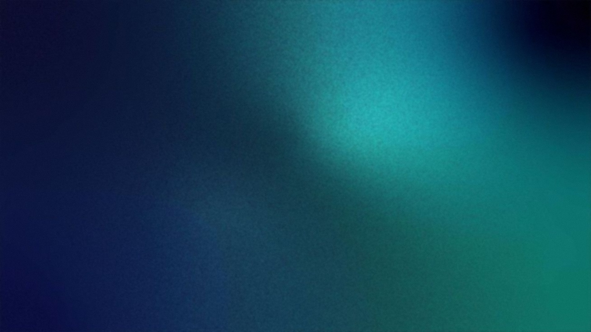
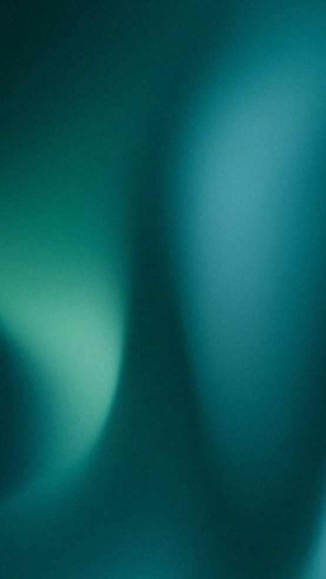

Премиальный культурный бренд цветных драгоценных камней и авторских украшений, формирующий новую культуру отношения к цветным драгоценным камням.
«Мы открываем людям мир цветных драгоценных камней и помогаем каждому найти камень, который станет естественным продолжением его личности и жизненного пути».
Более 18 лет Gem AnaStation исследует мир цветных драгоценных камней, изучает их природную уникальность, происхождение и характер, занимается поиском и подбором редких экземпляров и созданием авторских ювелирных украшений.
В основе бренда — глубокая экспертиза, персональный подход и убеждение, что каждый драгоценный камень обладает собственной индивидуальностью, как и человек.
Gem AnaStation формирует новую культуру отношения к цветным драгоценным камням, превращая их из атрибута роскоши в предмет осознанного выбора, а украшение — в естественное продолжение личности.

Знакомство с человеком
Характер, эстетика, ценности
Подбор созвучного камня
Разработка индивидуального дизайна
Создание авторского украшения
От знакомства с человеком до украшения, которое становится естественным продолжением его индивидуальности.

Экспертный поиск, подбор и продажа природных цветных драгоценных камней.
Создание индивидуальных ювелирных изделий — от выбора камня и разработки дизайна до готового украшения.
Индивидуальная работа с человеком: подбор драгоценного камня с учётом его характера, эстетики и предпочтений.
Подбор камней и экспертное сопровождение для ювелирных дизайнеров, брендов и профессиональных партнёров.